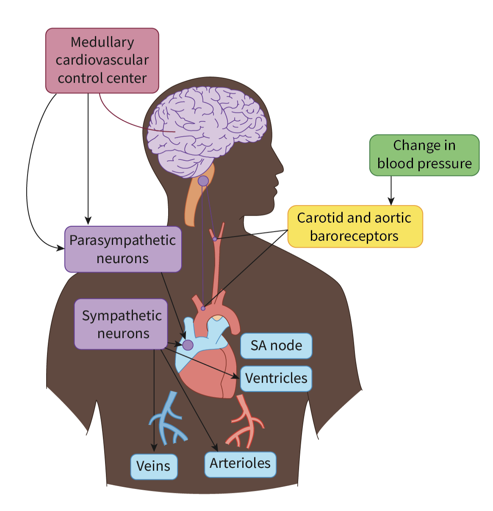

Specialized receptors
Baroreceptors: blood pressure.
Chemoreceptors: pH value of blood, levels of O2 and CO2 in blood.
Both receptors work by sensing stimulus then send it to Medulla oblongata.
*Nervous System* Baroreceptors: help increase blood pressure
1. Baroreceptors sense that the stretch of arteries decreases.
2. Singals send to medulla oblongata.
3. Medulla oblongata activates SNS (Sympathetic Nervous System), inhibits PNS.
4. Activation of SNS contrict blood vessels and increase heart rate, blood presure increase.
註: decrease blood pressure is the direct opposite.
*Endocrine System* The Role of enpinephrine
1. During stress moments, the hypothalamus senses it and send signals to automic nervous system.
2. Activates the andrenal glands, hence secreting enpinephrine into blood streams
3. Increase heart rate
